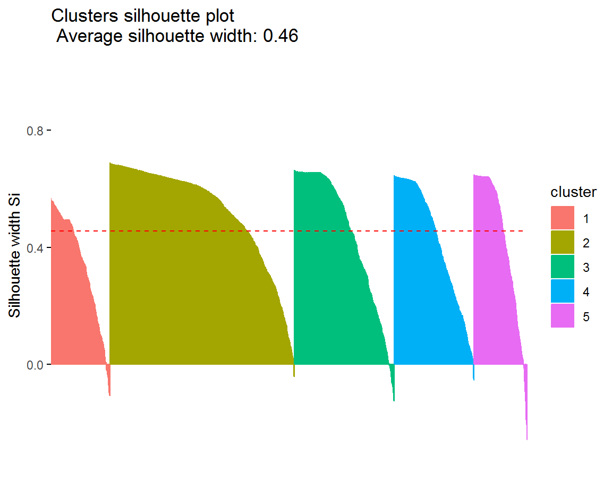

About
About the Data Science Accelerator
The Data Science Accelerator is a capability-building programme which gives analysts from across the public sector the opportunity to develop their data science skills.
For this project, I will be guided by an experienced data scientist from the Ministry of Justice and based at the GDS hub in Whitechapel once a week between December 2018 and March 2019. As part of this accelerator, I aim to explore data science techniques to produce meaningful and helpful insights both to other teams within the Greater London Authority, as well as colleagues at participating London boroughs.
About the voter registration project
The main objective of the project is to use machine learning techniques to spot patterns and trends within the data that we would not detect with more traditional methods usually associated with this kind of data. The focus, for now, is on understanding the data. We hope that this will lead to insights, recommendations, ideas and confidence to pursue better-informed campaigns to maximize voter registration in the capital.
Please be aware that this project is exploratory in nature. So anything found on these pages are not carved in stone. If you have been sent a link to this page, we assume you have some kind of interest, so we are interested in your views.
Boroughs included in this analysis
- Lewisham
- Brent
- Wandsworth
- Waltham Forest
- Greenwich
- Lambeth
- Croydon
Icon made by Freepik from www.flaticon.com
Details about this site and different types of analysis
This site is the output of this project. Anything I learn, will be added to these pages. If any of it is not clear, or difficult to understand, please do get in touch and I will try to update accordingly. This site is hosted on github and written in RMarkdown, using the flexdashboard and crosstalk packages for functionality.
The main way I have attempted to communicate my results is using storyboard pages with navigation in large squared along the top of page. This can result in very large html files that can take a long time to load. So I have created a different storyboard for each of the different types of my analysis, as detailed below.
General information: details about the project, its background, stated aims and its data sources
Clustering: part of the data exploration, where I look for distinct groupings within the data
Predictive modelling: Statistical models that can predict which areas will have lower rates of voter registration. Here I use a particular type of model called a ‘decision tree’ that is very strong at explaining relationships between variables.
OA Clusters
What are the aims of using non-supervised learning (or clustering)?
Clustering data can be described as ‘the art of finding groups in data’. Classifying similar objects into groups is an important and natural human activity and a prominent part of science, history, government, education and marketing. In the past, clustering and categorising has usually been quite subjective, and down to the judgment of the researcher.
Larger and more complex data sets have seen the rise of automatic categorisation procedures, which is where clustering techniques fit in to the world of data science. The main reasons for using this kind of technique are:
- identify distinct groups within a data set
- as an extension of exploratory data analysis
- gain insight into how the data and how variables relate to one another
- improve supervised/predictive analysis
In this project, each of the above are relevant.
Since its creation as a Roman city over 2000 years ago, London’s growth has been haphazard and random, compared to the more planned and gradual expansion of other cities. But even so, when we break up the boroughs by OA, can we see distinct clusters of neighbourhoods, like Victorian terraces, postwar tower blocks, suburban cul-de-sacs and modern blocks of flats?
Given that OAs are purely administrative inventions - can we see clusters like this emerge? Or is the data too noisy?
The aim of this part of the analysis is to run, explain and measure the performance of buildings clusters on our data set. By this, I mean I will come up with what I think
Main findings and conclusions
Summary of data and aims of cluster analysis
At the moment, this data is only for Lewisham Council. I will be running the cluster on buildings data, which has been split into categories for type and age.
Type: Flat block | Converted Flats | House (detached/semi-detached) | Terraced house
Age: Victorian/pre-WW1 | Interwar | Postwar (1945-1979) | Modern (1980-)
For each OA, the percentage of addresses that fall into each of the above categories is calculated. The clusters are based on these variables. What we are looking for here is whether or not OAs fit into neat categories of building types.
This analysis is carried out using k-means clustering, where we need to specify the number of categories, then the algorithms find that number of categories in the data. We call this unsupervised learning, since we are not defining what the categories are.
Our first step therefore is to try and decide how many categories there are. A common way of doing is using the elbow method. See the next slide.
General
In the above example, the resulting five clusters, that are unevenly distributed.
Silhouette plot to test how well defined the clusters are

Comparison of clusters against voter registration
Each of the clusters has a different distribution compared to voter registration.